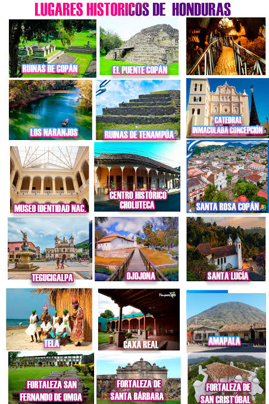

Para disfrutar en esta semana morazánica, Honduras cuenta con muchos lugares turísticos que puedes visitar, desde playas, montañas, ríos y lagos. En este sitio web te mostraremos algunos de los destinos más populares y hermosos que puedes explorar en Honduras. ¡Prepárate para descubrir la belleza natural y cultural de nuestro país!
